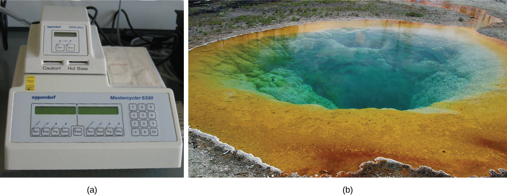
The latter half of the twentieth century began with the discovery of the structure of DNA, then progressed to the development of the basic tools used to study and manipulate DNA. These advances, as well as advances in our understanding of and ability to manipulate cells, have led some to refer to the twenty-first century as the biotechnology century. The rate of discovery and of the development of new applications in medicine, agriculture, and energy is expected to accelerate, bringing huge benefits to humankind and perhaps also significant risks. Many of these developments are expected to raise significant ethical and social questions that human societies have not yet had to consider.
- Explain the basic techniques used to manipulate genetic material
- Explain molecular and reproductive cloning
- Describe uses of biotechnology in medicine
- Describe uses of biotechnology in agriculture
- Define genomics and proteomics
- Define whole genome sequencing
- Explain different applications of genomics and proteomics
| # | Lesson | Key Concepts | Source |
|---|---|---|---|
| 1 | Cloning & Genetic Engineering — Tools | Biotechnology definition, nucleic acid structure review, DNA extraction, gel electrophoresis, PCR | CB 10.1 (first half) |
| 2 | Cloning & Genetic Engineering — Cloning | Restriction enzymes, plasmids, molecular cloning, recombinant DNA, reproductive cloning, Dolly, cellular cloning, genetic engineering, reverse genetics | CB 10.1 (second half) |
| 3 | Biotechnology in Medicine & Agriculture | Genetic diagnosis, gene therapy, vaccines, antibiotics, hormones, transgenic animals, transgenic plants, Agrobacterium, Bt toxin, FlavrSavr | CB 10.2 |
| 4 | Genomics & Proteomics | Genome mapping, whole genome sequencing, CRISPR, pharmacogenomics, proteomics | CB 10.3 |
| 5 | Practice Test | All topics — comprehensive assessment | All |
| Standard | Description | Lessons |
|---|---|---|
| BIO.6a | Techniques used to manipulate genetic material | 1, 2 |
| BIO.6b | Applications of biotechnology in medicine and agriculture | 3 |
| BIO.6c | Genomics, proteomics, and gene editing | 4 |
- Explain the basic techniques used to manipulate genetic material
- Explain molecular and reproductive cloning
Biotechnology is the use of artificial methods to modify the genetic material of living organisms or cells to produce novel compounds or to perform new functions. Biotechnology has been used for improving livestock and crops since the beginning of agriculture through selective breeding. Since the discovery of the structure of DNA in 1953, and particularly since the development of tools and methods to manipulate DNA in the 1970s, biotechnology has become synonymous with the manipulation of organisms' DNA at the molecular level. The primary applications of this technology are in medicine (for the production of vaccines and antibiotics) and in agriculture (for the genetic modification of crops). Biotechnology also has many industrial applications, such as fermentation, the treatment of oil spills, and the production of biofuels, as well as many household applications such as the use of enzymes in laundry detergent.
To accomplish the applications described above, biotechnologists must be able to extract, manipulate, and analyze nucleic acids.
To understand the basic techniques used to work with nucleic acids, remember that nucleic acids are macromolecules made of nucleotides (a sugar, a phosphate, and a nitrogenous base). The phosphate groups on these molecules each have a net negative charge. An entire set of DNA molecules in the nucleus of eukaryotic organisms is called the genome. DNA has two complementary strands linked by hydrogen bonds between the paired bases.
Unlike DNA in eukaryotic cells, RNA molecules leave the nucleus. Messenger RNA (mRNA) is analyzed most frequently because it represents the protein-coding genes that are being expressed in the cell.
To study or manipulate nucleic acids, the DNA must first be extracted from cells. Various techniques are used to extract different types of DNA (Figure 10.2). Most nucleic acid extraction techniques involve steps to break open the cell, and then the use of enzymatic reactions to destroy all undesired macromolecules. Cells are broken open using a detergent solution containing buffering compounds. To prevent degradation and contamination, macromolecules such as proteins and RNA are inactivated using enzymes. The DNA is then brought out of solution using alcohol. The resulting DNA, because it is made up of long polymers, forms a gelatinous mass.
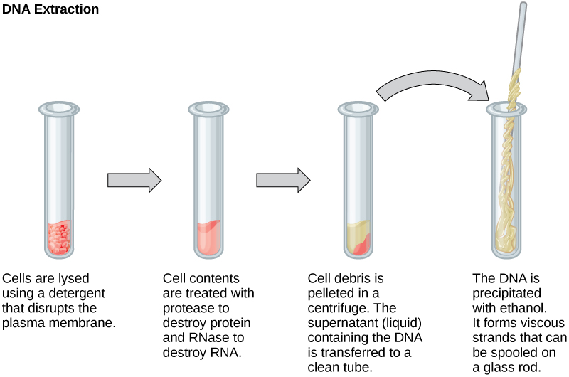
RNA is studied to understand gene expression patterns in cells. RNA is naturally very unstable because enzymes that break down RNA are commonly present in nature. Some are even secreted by our own skin and are very difficult to inactivate. Similar to DNA extraction, RNA extraction involves the use of various buffers and enzymes to inactivate other macromolecules and preserve only the RNA.
Because nucleic acids are negatively charged ions at neutral or alkaline pH in an aqueous environment, they can be moved by an electric field. Gel electrophoresis is a technique used to separate charged molecules on the basis of size and charge. The nucleic acids can be separated as whole chromosomes or as fragments. The nucleic acids are loaded into a slot at one end of a gel matrix, an electric current is applied, and negatively charged molecules are pulled toward the opposite end of the gel (the end with the positive electrode). Smaller molecules move through the pores in the gel faster than larger molecules; this difference in the rate of migration separates the fragments on the basis of size. The nucleic acids in a gel matrix are invisible until they are stained with a compound that allows them to be seen, such as a dye. Distinct fragments of nucleic acids appear as bands at specific distances from the top of the gel (the negative electrode end) that are based on their size (Figure 10.3). A mixture of many fragments of varying sizes appear as a long smear, whereas uncut genomic DNA is usually too large to run through the gel and forms a single large band at the top of the gel.
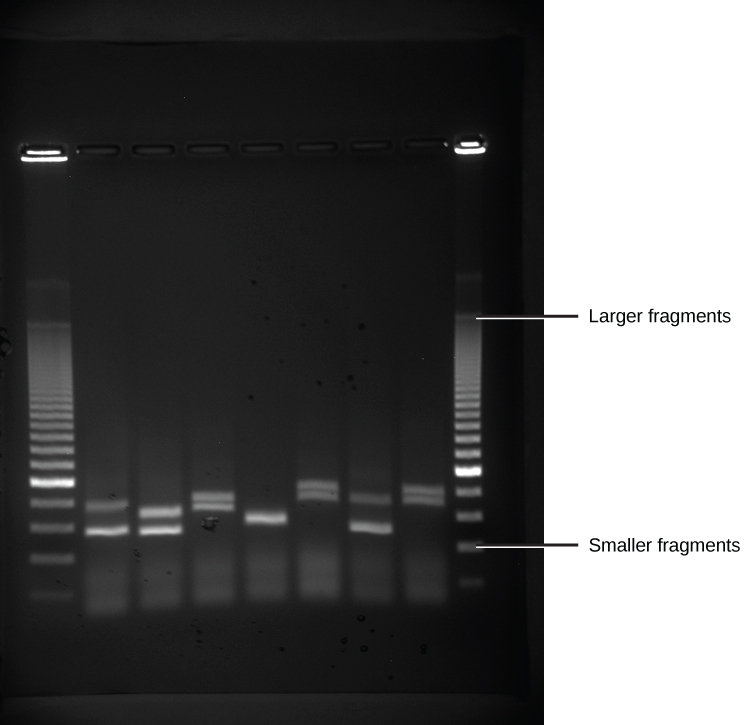
DNA analysis often requires focusing on one or more specific regions of the genome. It also frequently involves situations in which only one or a few copies of a DNA molecule are available for further analysis. These amounts are insufficient for most procedures, such as gel electrophoresis. Polymerase chain reaction (PCR) is a technique used to rapidly increase the number of copies of specific regions of DNA for further analyses (Figure 10.4). PCR uses a special form of DNA polymerase, the enzyme that replicates DNA, and other short nucleotide sequences called primers that base pair to a specific portion of the DNA being replicated. PCR is used for many purposes in laboratories. These include: 1) the identification of the owner of a DNA sample left at a crime scene; 2) paternity analysis; 3) the comparison of small amounts of ancient DNA with modern organisms; and 4) determining the sequence of nucleotides in a specific region.
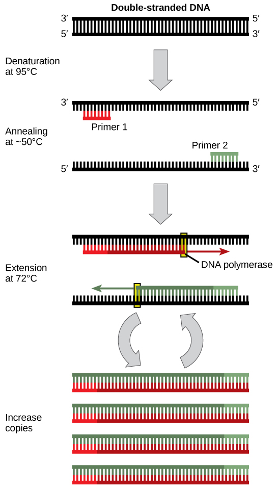
Describe the steps involved in extracting DNA from cells, explain how gel electrophoresis separates DNA fragments, and describe how PCR amplifies specific regions of DNA.
- Explain the basic techniques used to manipulate genetic material
- Explain molecular and reproductive cloning
In general, cloning means the creation of a perfect replica. Typically, the word is used to describe the creation of a genetically identical copy. In biology, the re-creation of a whole organism is referred to as "reproductive cloning." Long before attempts were made to clone an entire organism, researchers learned how to copy short stretches of DNA—a process that is referred to as molecular cloning. The technique offered methods to create new medicines and to overcome difficulties with existing ones. When Lydia Villa-Komaroff, working in the Gilbert Lab at Harvard, published the first paper outlining the technique for producing synthetic insulin, diabetes researchers and patients received new hope in fighting the disease. Insulin at that time was only produced using pig and cow pancreases, and the life-saving substance was often in short supply. Synthetic insulin, once mass produced, would solve that problem for many patients. These early discoveries led to the "BioTech Boom," and spurred continued research and funding for newer and better ways to improve health.
Plasmids with foreign DNA inserted into them are called recombinant DNA molecules because they contain new combinations of genetic material. Proteins that are produced from recombinant DNA molecules are called recombinant proteins. Not all recombinant plasmids are capable of expressing genes. Plasmids may also be engineered to express proteins only when stimulated by certain environmental factors, so that scientists can control the expression of the recombinant proteins.
These plasmid vectors contain many short DNA sequences that can be cut with different commonly available restriction enzymes. Restriction enzymes (also called restriction endonucleases) recognize specific DNA sequences and cut them in a predictable manner; they are naturally produced by bacteria as a defense mechanism against foreign DNA. Many restriction enzymes make staggered cuts in the two strands of DNA, such that the cut ends have a 2- to 4-nucleotide single-stranded overhang. The sequence that is recognized by the restriction enzyme is a four- to eight-nucleotide sequence that is a palindrome. Like with a word palindrome, this means the sequence reads the same forward and backward. In most cases, the sequence reads the same forward on one strand and backward on the complementary strand. When a staggered cut is made in a sequence like this, the overhangs are complementary (Figure 10.5).
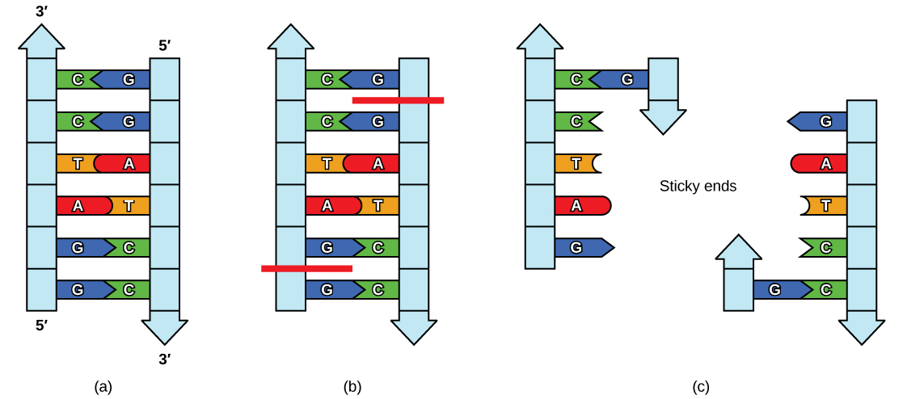
Because these overhangs are capable of coming back together by hydrogen bonding with complementary overhangs on a piece of DNA cut with the same restriction enzyme, these are called "sticky ends." The process of forming hydrogen bonds between complementary sequences on single strands to form double-stranded DNA is called annealing. Addition of an enzyme called DNA ligase, which takes part in DNA replication in cells, permanently joins the DNA fragments when the sticky ends come together. In this way, any DNA fragment can be spliced between the two ends of a plasmid DNA that has been cut with the same restriction enzyme (Figure 10.6).
Cloning allows for the creation of multiple copies of genes, expression of genes, and study of specific genes. To get the DNA fragment into a bacterial cell in a form that will be copied or expressed, the fragment is first inserted into a plasmid. A plasmid (also called a vector in this context) is a small circular DNA molecule that replicates independently of the chromosomal DNA in bacteria. In cloning, the plasmid molecules can be used to provide a "vehicle" in which to insert a desired DNA fragment. Modified plasmids are usually reintroduced into a bacterial host for replication. As the bacteria divide, they copy their own DNA (including the plasmids). The inserted DNA fragment is copied along with the rest of the bacterial DNA. In a bacterial cell, the fragment of DNA from the human genome (or another organism that is being studied) is referred to as foreign DNA to differentiate it from the DNA of the bacterium (the host DNA).
Plasmids occur naturally in bacterial populations (such as Escherichia coli) and have genes that can contribute favorable traits to the organism, such as antibiotic resistance (the ability to be unaffected by antibiotics). Plasmids have been highly engineered as vectors for molecular cloning and for the subsequent large-scale production of important molecules, such as insulin. A valuable characteristic of plasmid vectors is the ease with which a foreign DNA fragment can be introduced.
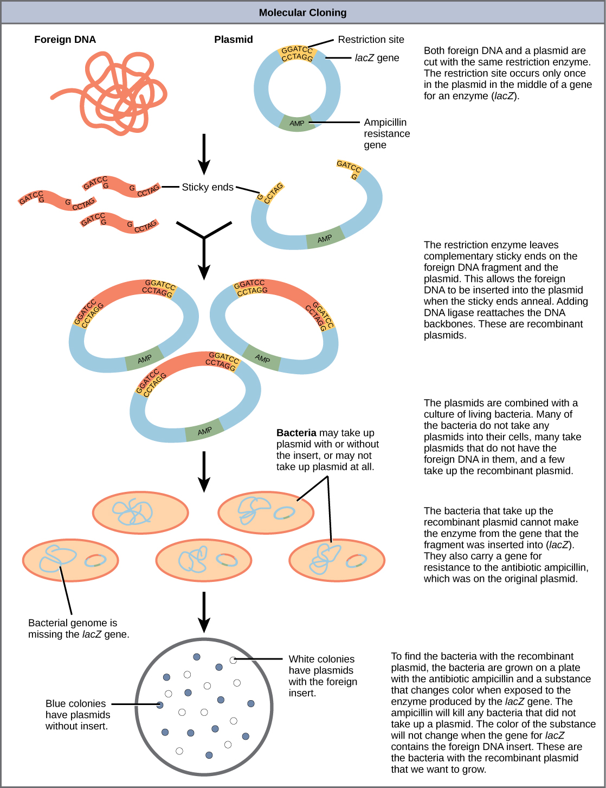
Reproductive cloning is a method used to make a clone or an identical copy of an entire multicellular organism. Most multicellular organisms undergo reproduction by sexual means, which involves the contribution of DNA from two individuals (parents), making it impossible to generate an identical copy or a clone of either parent. Recent advances in biotechnology have made it possible to reproductively clone mammals in the laboratory.
Natural sexual reproduction involves the union, during fertilization, of a sperm and an egg. Each of these gametes is haploid, meaning they contain one set of chromosomes in their nuclei. The resulting cell, or zygote, is then diploid and contains two sets of chromosomes. This cell divides mitotically to produce a multicellular organism. However, the union of just any two cells cannot produce a viable zygote; there are components in the cytoplasm of the egg cell that are essential for the early development of the embryo during its first few cell divisions. Without these provisions, there would be no subsequent development. Therefore, to produce a new individual, both a diploid genetic complement and an egg cytoplasm are required. The approach to producing an artificially cloned individual is to take the egg cell of one individual and to remove the haploid nucleus. Then a diploid nucleus from a body cell of a second individual, the donor, is put into the egg cell. The egg is then stimulated to divide so that development proceeds. This sounds simple, but in fact it takes many attempts before each of the steps is completed successfully.
The first cloned agricultural animal was Dolly, a sheep who was born in 1996. The success rate of reproductive cloning at the time was very low. Dolly lived for six years and died of a lung tumor (Figure 10.7). There was speculation that because the cell DNA that gave rise to Dolly came from an older individual, the age of the DNA may have affected her life expectancy. Since Dolly, several species of animals (such as horses, bulls, and goats) have been successfully cloned.
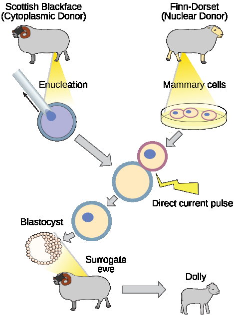
There have been attempts at producing cloned human embryos as sources of embryonic stem cells. In the procedure, the DNA from an adult human is introduced into a human egg cell, which is then stimulated to divide. The technology is similar to the technology that was used to produce Dolly, but the embryo is never implanted into a surrogate carrier. The cells produced are called embryonic stem cells because they have the capacity to develop into many different kinds of cells, such as muscle or nerve cells. The stem cells could be used to research and ultimately provide therapeutic applications, such as replacing damaged tissues. The benefit of cloning in this instance is that the cells used to regenerate new tissues would be a perfect match to the donor of the original DNA. For example, a leukemia patient would not require a sibling with a tissue match for a bone-marrow transplant. Freda Miller and Elaine Fuchs, working independently, discovered stem cells in different layers of the skin. These cells help the skin repair itself, and their discovery may have applications in treatments of skin disease and potentially other conditions, such as nerve damage.
Using recombinant DNA technology to modify an organism's DNA to achieve desirable traits is called genetic engineering. Addition of foreign DNA in the form of recombinant DNA vectors that are generated by molecular cloning is the most common method of genetic engineering. An organism that receives the recombinant DNA is called a genetically modified organism (GMO). If the foreign DNA that is introduced comes from a different species, the host organism is called transgenic. Bacteria, plants, and animals have been genetically modified since the early 1970s for academic, medical, agricultural, and industrial purposes. These applications will be examined in more detail in the next module.
Although the classic methods of studying the function of genes began with a given phenotype and determined the genetic basis of that phenotype, modern techniques allow researchers to start at the DNA sequence level and ask: "What does this gene or DNA element do?" This technique, called reverse genetics, has resulted in reversing the classical genetic methodology. One example of this method is analogous to damaging a body part to determine its function. An insect that loses a wing cannot fly, which means that the wing's function is flight. The classic genetic method compares insects that cannot fly with insects that can fly, and observes that the non-flying insects have lost wings. Similarly in a reverse genetics approach, mutating or deleting genes provides researchers with clues about gene function. Alternately, reverse genetics can be used to cause a gene to overexpress itself to determine what phenotypic effects may occur.
Explain how restriction enzymes and plasmids are used in molecular cloning. Then describe the process of reproductive cloning used to create Dolly the sheep, and explain why stem cells from cellular cloning could be useful in medicine.
- Describe uses of biotechnology in medicine
- Describe uses of biotechnology in agriculture
It is easy to see how biotechnology can be used for medicinal purposes. Knowledge of the genetic makeup of our species, the genetic basis of heritable diseases, and the invention of technology to manipulate and fix mutant genes provides methods to treat diseases. Biotechnology in agriculture can enhance resistance to disease, pests, and environmental stress to improve both crop yield and quality.
The process of testing for suspected genetic defects before administering treatment is called genetic diagnosis by genetic testing. In some cases in which a genetic disease is present in an individual's family, family members may be advised to undergo genetic testing. For example, mutations in the BRCA genes may increase the likelihood of developing breast, ovarian, and some other cancers. A person with breast cancer can be screened for these mutations. If one of the high-risk mutations is found, relatives may also wish to be screened for that particular mutation, or simply be more vigilant for the occurrence of cancers. Genetic testing is also offered for fetuses (or embryos with in vitro fertilization) to determine the presence or absence of disease-causing genes in families with specific debilitating diseases.
Gene therapy is a genetic engineering technique that may one day be used to cure certain genetic diseases. In its simplest form, it involves the introduction of a non-mutated gene at a random location in the genome to cure a disease by replacing a protein that may be absent in these individuals because of a genetic mutation. The non-mutated gene is usually introduced into diseased cells as part of a vector transmitted by a virus, such as an adenovirus, that can infect the host cell and deliver the foreign DNA into the genome of the targeted cell (Figure 10.8). To date, gene therapies have been primarily experimental procedures in humans. A few of these experimental treatments have been successful, but the methods may be important in the future as the factors limiting its success are resolved.
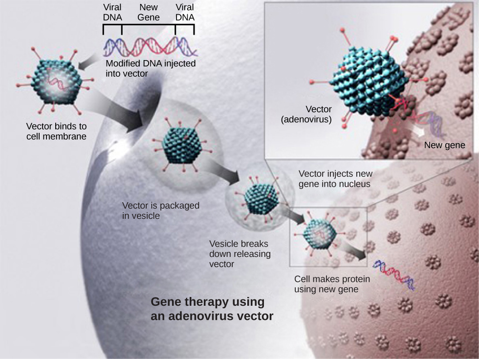
Traditional vaccination strategies use weakened or inactive forms of microorganisms or viruses to stimulate the immune system. Modern techniques use specific genes of microorganisms cloned into vectors and mass-produced in bacteria to make large quantities of specific substances to stimulate the immune system. The substance is then used as a vaccine. In some cases, such as the H1N1 flu vaccine, genes cloned from the virus have been used to combat the constantly changing strains of this virus.
Antibiotics kill bacteria and are naturally produced by microorganisms such as fungi; penicillin is perhaps the most well-known example. Antibiotics are produced on a large scale by cultivating and manipulating fungal cells. The fungal cells have typically been genetically modified to improve the yields of the antibiotic compound.
Recombinant DNA technology was used to produce large-scale quantities of the human hormone insulin in E. coli as early as 1978. Previously, it was only possible to treat diabetes with pig insulin, which caused allergic reactions in many humans because of differences in the insulin molecule. In addition, human growth hormone (HGH) is used to treat growth disorders in children. The HGH gene was cloned from a cDNA (complementary DNA) library and inserted into E. coli cells by cloning it into a bacterial vector.
Although several recombinant proteins used in medicine are successfully produced in bacteria, some proteins need a eukaryotic animal host for proper processing. For this reason, genes have been cloned and expressed in animals such as sheep, goats, chickens, and mice. Animals that have been modified to express recombinant DNA are called transgenic animals (Figure 10.9).
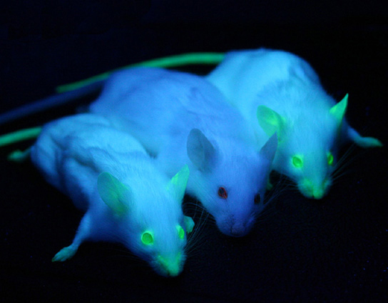
Several human proteins are expressed in the milk of transgenic sheep and goats. In one commercial example, the FDA has approved a blood anticoagulant protein that is produced in the milk of transgenic goats for use in humans. Mice have been used extensively for expressing and studying the effects of recombinant genes and mutations.
Manipulating the DNA of plants (creating genetically modified organisms, or GMOs) has helped to create desirable traits such as disease resistance, herbicide, and pest resistance, better nutritional value, and better shelf life (Figure 10.10). Plants are the most important source of food for the human population. Farmers developed ways to select for plant varieties with desirable traits long before modern-day biotechnology practices were established.
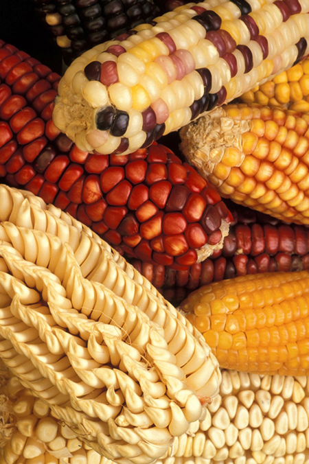
Transgenic plants have received DNA from other species. Because they contain unique combinations of genes and are not restricted to the laboratory, transgenic plants and other GMOs are closely monitored by government agencies to ensure that they are fit for human consumption and do not endanger other plant and animal life. Because foreign genes can spread to other species in the environment, particularly in the pollen and seeds of plants, extensive testing is required to ensure ecological stability. Staples like corn, potatoes, and tomatoes were the first crop plants to be genetically engineered.
In plants, tumors caused by the bacterium Agrobacterium tumefaciens occur by transfer of DNA from the bacterium to the plant. The artificial introduction of DNA into plant cells is more challenging than in animal cells because of the thick plant cell wall. Researchers used the natural transfer of DNA from Agrobacterium to a plant host to introduce DNA fragments of their choice into plant hosts. In nature, the disease-causing A. tumefaciens have a set of plasmids that contain genes that integrate into the infected plant cell's genome. Researchers manipulate the plasmids to carry the desired DNA fragment and insert it into the plant genome.
Bacillus thuringiensis (Bt) is a bacterium that produces protein crystals that are toxic to many insect species that feed on plants. Insects that have eaten Bt toxin stop feeding on the plants within a few hours. After the toxin is activated in the intestines of the insects, death occurs within a couple of days. The crystal toxin genes have been cloned from the bacterium and introduced into plants, therefore allowing plants to produce their own crystal Bt toxin that acts against insects. Bt toxin is safe for the environment and non-toxic to mammals (including humans). As a result, it has been approved for use by organic farmers as a natural insecticide. There is some concern, however, that insects may evolve resistance to the Bt toxin in the same way that bacteria evolve resistance to antibiotics.
The first GM crop to be introduced into the market was the FlavrSavr Tomato produced in 1994. Molecular genetic technology was used to slow down the process of softening and rotting caused by fungal infections, which led to increased shelf life of the GM tomatoes. Additional genetic modification improved the flavor of this tomato. The FlavrSavr tomato did not successfully stay in the market because of problems maintaining and shipping the crop.
Explain how gene therapy works using a viral vector. Then describe at least two examples of how biotechnology has been applied to agriculture, including the role of Bt toxin and transgenic plants.
- Define genomics and proteomics
- Define whole genome sequencing
- Explain different applications of genomics and proteomics
The study of nucleic acids began with the discovery of DNA, progressed to the study of genes and small fragments, and has now exploded to the field of genomics. Genomics is the study of entire genomes, including the complete set of genes, their nucleotide sequence and organization, and their interactions within a species and with other species. The advances in genomics have been made possible by DNA sequencing technology. Just as information technology has led to Google Maps that enable us to get detailed information about locations around the globe, genomic information is used to create similar maps of the DNA of different organisms.
Genome mapping is the process of finding the location of genes on each chromosome. The maps that are created are comparable to the maps that we use to navigate streets. A genetic map is an illustration that lists genes and their location on a chromosome. Genetic maps provide the big picture (similar to a map of interstate highways) and use genetic markers (similar to landmarks). A genetic marker is a gene or sequence on a chromosome that shows genetic linkage with a trait of interest. The genetic marker tends to be inherited with the gene of interest, and one measure of distance between them is the recombination frequency during meiosis. Early geneticists called this linkage analysis.
Physical maps get into the intimate details of smaller regions of the chromosomes (similar to a detailed road map) (Figure 10.11). A physical map is a representation of the physical distance, in nucleotides, between genes or genetic markers. Both genetic linkage maps and physical maps are required to build a complete picture of the genome. Having a complete map of the genome makes it easier for researchers to study individual genes. Human genome maps help researchers in their efforts to identify human disease-causing genes related to illnesses such as cancer, heart disease, and cystic fibrosis, to name a few. In addition, genome mapping can be used to help identify organisms with beneficial traits, such as microbes with the ability to clean up pollutants or even prevent pollution. Research involving plant genome mapping may lead to methods that produce higher crop yields or to the development of plants that adapt better to climate change.
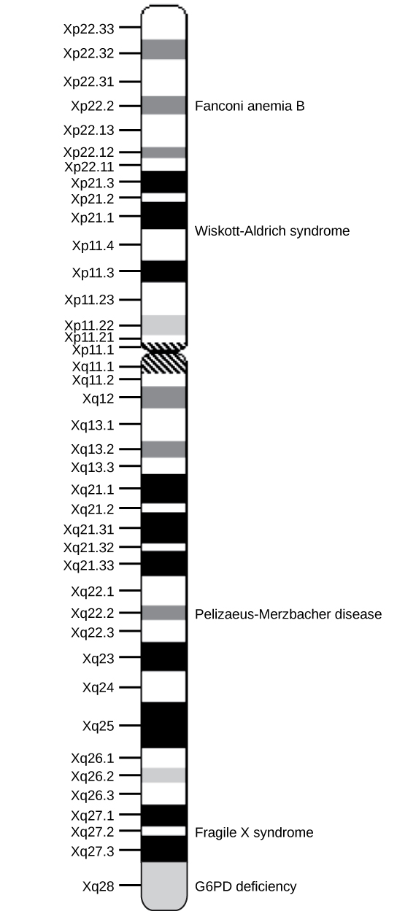
Genetic maps provide the outline, and physical maps provide the details. It is easy to understand why both types of genome-mapping techniques are important to show the big picture. Information obtained from each technique is used in combination to study the genome. Genomic mapping is used with different model organisms that are used for research. Genome mapping is still an ongoing process, and as more advanced techniques are developed, more advances are expected. Genome mapping is similar to completing a complicated puzzle using every piece of available data. Mapping information generated in laboratories all over the world is entered into central databases, such as the National Center for Biotechnology Information (NCBI). Efforts are made to make the information more easily accessible to researchers and the general public. Just as we use global positioning systems instead of paper maps to navigate through roadways, NCBI allows us to use a genome viewer tool to simplify the data mining process.
Although there have been significant advances in the medical sciences in recent years, doctors are still confounded by many diseases and researchers are using whole genome sequencing to get to the bottom of the problem. Whole genome sequencing is a process that determines the DNA sequence of an entire genome. Whole genome sequencing is a brute-force approach to problem solving when there is a genetic basis at the core of a disease. Several laboratories now provide services to sequence, analyze, and interpret entire genomes.
In 2010, whole genome sequencing was used to save a young boy whose intestines had multiple mysterious abscesses. The child had several colon operations with no relief. Finally, a whole genome sequence revealed a defect in a pathway that controls apoptosis (programmed cell death). A bone marrow transplant was used to overcome this genetic disorder, leading to a cure for the boy. He was the first person to be successfully diagnosed using whole genome sequencing.
The first genomes to be sequenced, such as those belonging to viruses, bacteria, and yeast, were smaller in terms of the number of nucleotides than the genomes of multicellular organisms. The genomes of other model organisms, such as the mouse (Mus musculus), the fruit fly (Drosophila melanogaster), and the nematode (Caenorhabditis elegans) are now known. A great deal of basic research is performed in model organisms because the information can be applied to other organisms. A model organism is a species that is studied as a model to understand the biological processes in other species that can be represented by the model organism. For example, fruit flies are able to metabolize alcohol like humans, so the genes affecting sensitivity to alcohol have been studied in fruit flies in an effort to understand the variation in sensitivity to alcohol in humans. Having entire genomes sequenced helps with the research efforts in these model organisms (Figure 10.12).
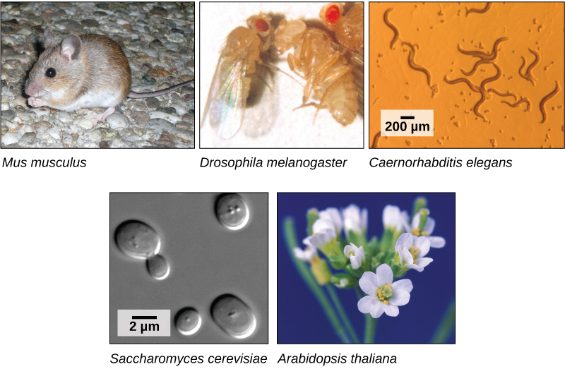
The first human genome sequence was published in 2003. The number of whole genomes that have been sequenced steadily increases and now includes hundreds of species and thousands of individual human genomes.
The introduction of DNA sequencing and whole genome sequencing projects, particularly the Human Genome Project, has expanded the applicability of DNA sequence information. Genomics is now being used in a wide variety of fields, such as metagenomics, pharmacogenomics, and mitochondrial genomics. The most commonly known application of genomics is to understand and find cures for diseases.
Predicting the risk of disease involves screening and identifying currently healthy individuals by genome analysis at the individual level. Intervention with lifestyle changes and drugs can be recommended before disease onset. However, this approach is most applicable when the problem arises from a single gene mutation. Such defects only account for about 5 percent of diseases found in developed countries. Most of the common diseases, such as heart disease, are multifactorial or polygenic, which refers to a phenotypic characteristic that is determined by two or more genes, and also environmental factors such as diet. In April 2010, scientists at Stanford University published the genome analysis of a healthy individual (Stephen Quake, a scientist at Stanford University, who had his genome sequenced); the analysis predicted his propensity to acquire various diseases. A risk assessment was done to analyze Quake's percentage of risk for 55 different medical conditions. A rare genetic mutation was found that showed him to be at risk for sudden heart attack. He was also predicted to have a 23 percent risk of developing prostate cancer and a 1.4 percent risk of developing Alzheimer's disease. The scientists used databases and several publications to analyze the genomic data. Even though genomic sequencing is becoming more affordable and analytical tools are becoming more reliable, ethical issues surrounding genomic analysis at a population level remain to be addressed. For example, could such data be legitimately used to charge more or less for insurance or to affect credit ratings?
For thousands of years, humans have engaged in some level of control over genes and heredity regarding the plants and animals we rely on. The technology now exists to exert that control more directly by precisely altering the DNA of organisms. The technique is usually referred to as CRISPR, for the portions of DNA it targets: "Clustered Regularly Interspaced Short Palindromic Repeats." In essence, DNA contains repetitive sequences with "spacers" between them. CRISPR-associated nucleases (known as "Cas") are enzymes that can identify, attach to, and cut the strand at precise locations. In 2012, Jennifer Doudna and Emmanuelle Charpentier developed a method to combine the Cas nuclease with a synthetically produced "guide RNA" that leads the nuclease to selected locations on the DNA strand. The discovery revolutionized gene editing. Researchers around the world have used CRISPR to manipulate the actual DNA of plants, animals, laboratory cell lines, and (in trials) human patients. Doudna and Charpentier were awarded the Nobel Prize for their work.
Gene editing is so promising because it can be used experimentally to understand disease or organismal limitations, then be applied to overcome those issues. For example, in a human trial, cancerous cells were removed from a person, edited to remove their cancerous properties at the DNA level, and reintroduced into the patient so that those now edited cells could multiply and replace the cancerous ones. Using the person's own cells increases the likelihood of acceptance and success.
Like other applications of genomics, the prospect of directly editing genes brings up a number of ethical issues. Both Doudna and Chapentier, as well as many other genetic engineers, support only certain CRISPR applications. And many governments and other entities place strict guidelines on the uses of the powerful technology.
Since 2005, it has been possible to conduct a type of study called a genome-wide association study, or GWAS. A GWAS is a method that identifies differences between individuals in single nucleotide polymorphisms (SNPs) that may be involved in causing diseases. The method is particularly suited to diseases that may be affected by one or many genetic changes throughout the genome. It is very difficult to identify the genes involved in such a disease using family history information. The GWAS method relies on a genetic database that has been in development since 2002 called the International HapMap Project. The HapMap Project sequenced the genomes of several hundred individuals from around the world and identified groups of SNPs. The groups include SNPs that are located near to each other on chromosomes so they tend to stay together through recombination. The fact that the group stays together means that identifying one marker SNP is all that is needed to identify all the SNPs in the group. There are several million SNPs identified, but identifying them in other individuals who have not had their complete genome sequenced is much easier because only the marker SNPs need to be identified.
In a common design for a GWAS, two groups of individuals are chosen; one group has the disease, and the other group does not. The individuals in each group are matched in other characteristics to reduce the effect of confounding variables causing differences between the two groups. For example, the genotypes may differ because the two groups are mostly taken from different parts of the world. Once the individuals are chosen, and typically their numbers are a thousand or more for the study to work, samples of their DNA are obtained. The DNA is analyzed using automated systems to identify large differences in the percentage of particular SNPs between the two groups. Often the study examines a million or more SNPs in the DNA. The results of GWAS can be used in two ways: the genetic differences may be used as markers for susceptibility to the disease in undiagnosed individuals, and the particular genes identified can be targets for research into the molecular pathway of the disease and potential therapies. An offshoot of the discovery of gene associations with disease has been the formation of companies that provide so-called "personal genomics" that will identify risk levels for various diseases based on an individual's SNP complement. The science behind these services is controversial.
Because GWAS looks for associations between genes and disease, these studies provide data for other research into causes, rather than answering specific questions themselves. An association between a gene difference and a disease does not necessarily mean there is a cause-and-effect relationship. However, some studies have provided useful information about the genetic causes of diseases. For example, three different studies in 2005 identified a gene for a protein involved in regulating inflammation in the body that is associated with a disease-causing blindness called age-related macular degeneration. This opened up new possibilities for research into the cause of this disease. A large number of genes have been identified to be associated with Crohn's disease using GWAS, and some of these have suggested new hypothetical mechanisms for the cause of the disease.
Pharmacogenomics involves evaluating the effectiveness and safety of drugs on the basis of information from an individual's genomic sequence. Personal genome sequence information can be used to prescribe medications that will be most effective and least toxic on the basis of the individual patient's genotype. Studying changes in gene expression could provide information about the gene transcription profile in the presence of the drug, which can be used as an early indicator of the potential for toxic effects. For example, genes involved in cellular growth and controlled cell death, when disturbed, could lead to the growth of cancerous cells. Genome-wide studies can also help to find new genes involved in drug toxicity. The gene signatures may not be completely accurate, but can be tested further before pathologic symptoms arise.
Traditionally, microbiology has been taught with the view that microorganisms are best studied under pure culture conditions, which involves isolating a single type of cell and culturing it in the laboratory. Because microorganisms can go through several generations in a matter of hours, their gene expression profiles adapt to the new laboratory environment very quickly. On the other hand, many species resist being cultured in isolation. Most microorganisms do not live as isolated entities, but in microbial communities known as biofilms. For all of these reasons, pure culture is not always the best way to study microorganisms. Metagenomics is the study of the collective genomes of multiple species that grow and interact in an environmental niche. Metagenomics can be used to identify new species more rapidly and to analyze the effect of pollutants on the environment (Figure 10.13). Metagenomics techniques can now also be applied to communities of higher eukaryotes, such as fish.
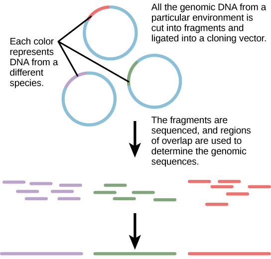
Knowledge of the genomics of microorganisms is being used to find better ways to harness biofuels from algae and cyanobacteria. The primary sources of fuel today are coal, oil, wood, and other plant products such as ethanol. Although plants are renewable resources, there is still a need to find more alternative renewable sources of energy to meet our population's energy demands. The microbial world is one of the largest resources for genes that encode new enzymes and produce new organic compounds, and it remains largely untapped. This vast genetic resource holds the potential to provide new sources of biofuels (Figure 10.14).
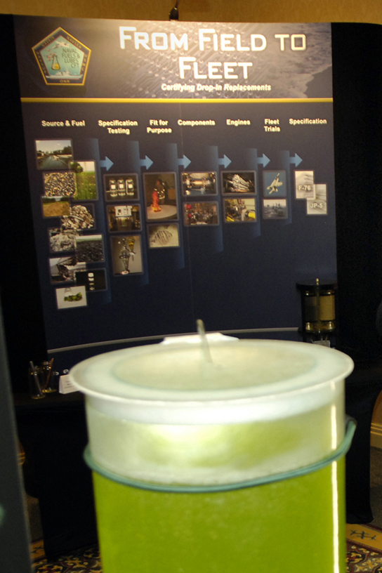
Mitochondria are intracellular organelles that contain their own DNA. Mitochondrial DNA mutates at a rapid rate and is often used to study evolutionary relationships. Another feature that makes studying the mitochondrial genome interesting is that in most multicellular organisms, the mitochondrial DNA is passed on from the mother during the process of fertilization. For this reason, mitochondrial genomics is often used to trace genealogy.
Information and clues obtained from DNA samples found at crime scenes have been used as evidence in court cases, and genetic markers have been used in forensic analysis. Genomic analysis has also become useful in this field. In 2001, the first use of genomics in forensics was published. It was a collaborative effort between academic research institutions and the FBI to solve the mysterious cases of anthrax (Figure 10.15) that was transported by the US Postal Service. Anthrax bacteria were made into an infectious powder and mailed to news media and two U.S. Senators. The powder infected the administrative staff and postal workers who opened or handled the letters. Five people died, and 17 were sickened from the bacteria. Using microbial genomics, researchers determined that a specific strain of anthrax was used in all the mailings; eventually, the source was traced to a scientist at a national biodefense laboratory in Maryland.
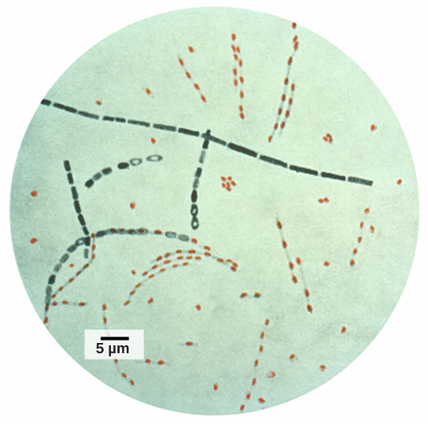
Genomics can reduce the trials and failures involved in scientific research to a certain extent, which could improve the quality and quantity of crop yields in agriculture (Figure 10.16). Linking traits to genes or gene signatures helps to improve crop breeding to generate hybrids with the most desirable qualities. Scientists use genomic data to identify desirable traits, and then transfer those traits to a different organism to create a new genetically modified organism, as described in the previous module. Scientists are discovering how genomics can improve the quality and quantity of agricultural production. For example, scientists could use desirable traits to create a useful product or enhance an existing product, such as making a drought-sensitive crop more tolerant of the dry season.
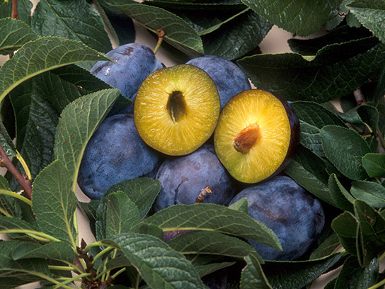
Proteins are the final products of genes that perform the function encoded by the gene. Proteins are composed of amino acids and play important roles in the cell. All enzymes (except ribozymes) are proteins and act as catalysts that affect the rate of reactions. Proteins are also regulatory molecules, and some are hormones. Transport proteins, such as hemoglobin, help transport oxygen to various organs. Antibodies that defend against foreign particles are also proteins. In the diseased state, protein function can be impaired because of changes at the genetic level or because of direct impact on a specific protein.
A proteome is the entire set of proteins produced by a cell type. Proteomes can be studied using the knowledge of genomes because genes code for mRNAs, and the mRNAs encode proteins. The study of the function of proteomes is called proteomics. Proteomics complements genomics and is useful when scientists want to test their hypotheses that were based on genes. Even though all cells in a multicellular organism have the same set of genes, the set of proteins produced in different tissues is different and dependent on gene expression. Thus, the genome is constant, but the proteome varies and is dynamic within an organism. In addition, RNAs can be alternatively spliced (cut and pasted to create novel combinations and novel proteins), and many proteins are modified after translation. Although the genome provides a blueprint, the final architecture depends on several factors that can change the progression of events that generate the proteome.
Genomes and proteomes of patients suffering from specific diseases are being studied to understand the genetic basis of the disease. The most prominent disease being studied with proteomic approaches is cancer (Figure 10.17). Proteomic approaches are being used to improve the screening and early detection of cancer; this is achieved by identifying proteins whose expression is affected by the disease process. An individual protein is called a biomarker, whereas a set of proteins with altered expression levels is called a protein signature. For a biomarker or protein signature to be useful as a candidate for early screening and detection of a cancer, it must be secreted in body fluids such as sweat, blood, or urine, so that large-scale screenings can be performed in a noninvasive fashion. The current problem with using biomarkers for the early detection of cancer is the high rate of false-negative results. A false-negative result is a negative test result that should have been positive. In other words, many cases of cancer go undetected, which makes biomarkers unreliable. Some examples of protein biomarkers used in cancer detection are CA-125 for ovarian cancer and PSA for prostate cancer. Protein signatures may be more reliable than biomarkers to detect cancer cells. Proteomics is also being used to develop individualized treatment plans, which involves the prediction of whether or not an individual will respond to specific drugs and the side effects that the individual may have. Proteomics is also being used to predict the possibility of disease recurrence.
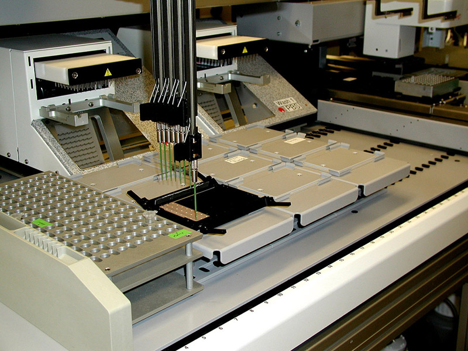
The National Cancer Institute has developed programs to improve the detection and treatment of cancer. The Clinical Proteomic Technologies for Cancer and the Early Detection Research Network are efforts to identify protein signatures specific to different types of cancers. The Biomedical Proteomics Program is designed to identify protein signatures and design effective therapies for cancer patients.
Explain the difference between a genetic map and a physical map. Then describe at least two applications of genomics (such as pharmacogenomics, metagenomics, or forensic analysis) and explain why proteomics complements genomics.
- Cloning and genetic engineering (DNA extraction, gel electrophoresis, PCR, restriction enzymes, molecular cloning, reproductive cloning) — CB 10.1
- Biotechnology in medicine and agriculture (gene therapy, transgenic organisms, GMOs, Bt toxin) — CB 10.2
- Genomics and proteomics (Human Genome Project, model organisms, pharmacogenomics, metagenomics, proteomics, CRISPR) — CB 10.3